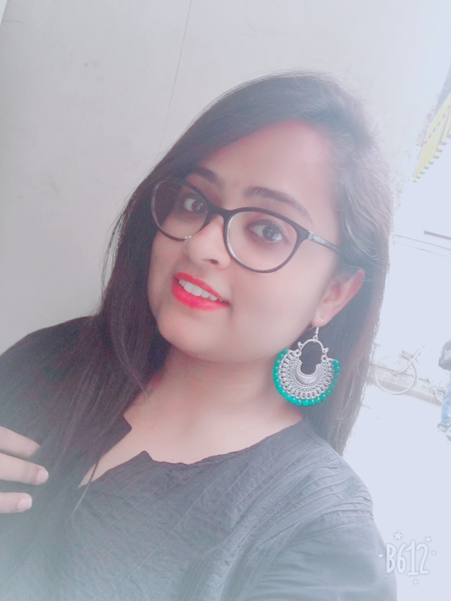

Alka Rana

Summary
I am Hard-working individual, with experience in customer service, and a
developing digital Humanist.
Education
-
Bachelors in arts, General History
- Carleton University,Ottawa, Canada
- (2013-2016)
-
Masters in Mediveal History of india
- Jawaharlal University, New Delhi, India
- (2016-2018)
-
Masters in Digital Humanties and Digital Knowledge
- Alma Mater Studiorum-Università di Bologna, Bologna, Italy
- (2022-Present)
Work Experience
-
Cashier, Crepe Delicious
- Ottawa, Canada
-
Answered customer's questions and made sure about customer
satisfaction
-
Established or identified prices of goods, services or admission,
and tabulate bills using calculators, cash registers, or optical
price scanners
Volunteer Experience
-
MEMBER OF THE STUDENT LIBRARY COMMITTEE, CARLETON UNIVERSITY, OTTAWA,
CANADA
- Discussed the opportunities to improve library
-
Communicated with fellow members about the needs of students in the
library
-
CONFERENCE ON AMBEDKAR AND HIS JOURNEY, CARLETON UNIVERSITY, OTTAWA,
CANADA
-
Taken care of the administration and handling of the conference by
entering names of all guests coming for the conference
-
Student Ambassador, Alma Mater Studiorum - Università di Bologna,
Bologna, Italy. 2022-present
-
Helping international students to know more about the University and
it's process.
Skills
- Research and analytical skills
- Computer skills in basic Python
- Knows HTML, CSS and Javascript
- Computer skills in Miscrosoft
- Customer service
- Organozational skills
Others
My Hobbies